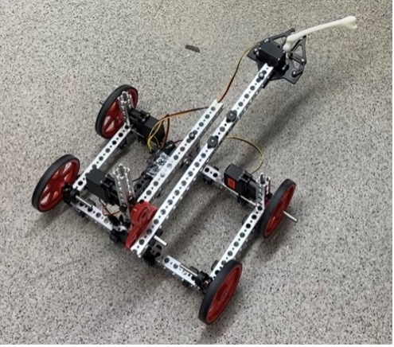

← Back to Home
RC Surgical Bone Transport Bot | Tron Day's Project

Overview
- Designed and assembled during limited time as a part of the “Tron Days” 48hr design challenge.
- Freehand concept sketches and AutoCAD drawings were used in initial planning around constraints. Built using a Tetrix kit.
- Safely delivering all three bones on the pegboard, the team was awarded an almost perfect score.